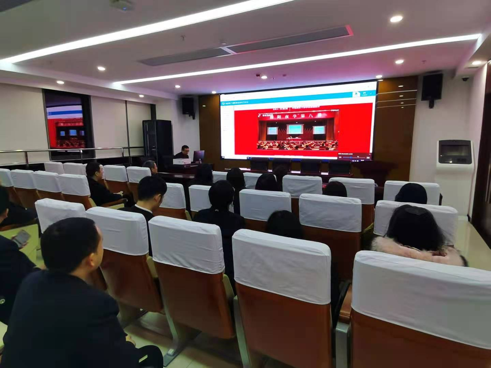

【信息发布时间：2020-12-26阅读次数：】 【我要打印】 【关闭】
12月25日晚，苏州市公共资源交易中心张家港分中心干部职工集体收看了“暨阳夜学”第八讲之“四史”学习专题讲座的网络直播。
本次讲座邀请了中国浦东干部学院教授王金定授课。王金定教授以《学习“四史“坚定信念》为题，为大家带来了一堂发人深省的精彩讲座。通过古今对比、案例分析，王教授从历史中的改革变法着手，详细分析了中国人民为了增强国力、抵抗外敌，实现国家复兴而不懈奋斗，艰辛探索救国之路，层层深入探讨了中国发展历程中的重大历史抉择，论证得出中国走马克思主义革命道路，走农村包围城市、武装夺取政权的革命道路的重要性和深远意义。新时代下我们要深入学习“四史”，在实现中国梦的伟大实践中践行初心使命。
本次讲座引发了中心干部职工的深刻思考和热烈讨论，纷纷表示通过本次学习，重温了中国改革变法和革命斗争的历史，以史为镜，进一步加深了对红色基因和革命精神的理解。中心要加强“四史“教育，认真规划和落实具体的学习方案，不断提高干部职工的政治站位和思想觉悟，并结合工作实际，筑牢在实践中守初心、担使命的思想自觉和行动自觉，坚定理想信念，立足本职工作传承和弘扬伟大的红色精神。
